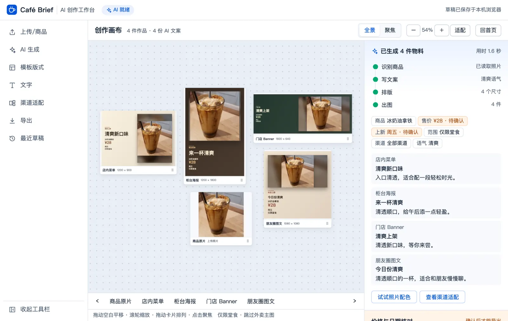

市场洞察
美图设计室、稿定设计等 AI 设计工具主要面向电商运营，以“模板改字换图 + AI 场景图”为主。独立咖啡店上新最怕价格、日期出错，而 AI 直接生成的中文常有错字乱码，出错只能整图重做。
产品定位
不做通用设计工具，只做“小店上新”这一个场景：输入 1 张商品照 + 1 句上新备注，一次产出菜单主图、柜台海报、门店横幅、朋友圈和外卖图。
Agent 设计
拆成“信息抽取—商户确认—创意生成—多渠道排版—一句话修改”的工作流。模型先抽取品名、价格、日期和渠道，商户确认后才生成；模型不可用时降级为规则抽取和手填。
可信约束
事实与创意分层：价格、优惠锁在可编辑文字层，AI 只负责画面和文案，营销说法只能来自商户输入。改价改期先预览受影响的物料，手改内容不会被覆盖。
结果
已上线。扣额度与取图分离并加任务锁，防止重复扣费和重复提交；98 项自动化测试全部通过，桌面与手机端经独立评审验收。

